ZIELONA PERGOLA · DEMO PORTFOLIO
Materiał do rozmowy na żywo — przechodzimy funkcję po funkcji, a przy każdej zaznaczamy, co bierzemy od razu, a nad czym warto się jeszcze zastanowić.
JAK KORZYSTAĆ Z TEGO MATERIAŁU
Klient chce to mieć w swojej stronie — traktujemy jako ustalone.
Podoba się, ale decyzja zapada później — do omówienia przy wycenie.
Zaznaczenia zapisują się w tej przeglądarce i widać je na slajdzie podsumowania na końcu. Jeśli przeglądasz ten materiał samodzielnie, Twoje wybory trafiają też do nas e-mailem — żebyśmy mogli się lepiej przygotować do rozmowy. Nawigacja: strzałki ← →, spacja, albo przyciski w rogu ekranu. Klawisz M otwiera spis treści.
CZĘŚĆ PIERWSZA
19 funkcji, które można pokazać na żywo już dziś — każda naprawdę uruchomiona, nie makieta.
CO JUŻ DZIAŁA · 01 / 19
Zamiast statycznego baneru — pasek, który sam mówi gościowi co jest ważne teraz: „dziś trwa lunch”, „pizza cały dzień”. Przyciski prowadzą prosto do rezerwacji, cateringu i zamówienia.
Jak to działa: Napis „Dziś: trwa lunch…” liczy się z aktualnej godziny i dnia tygodnia — nikt nie musi tego ręcznie zmieniać.
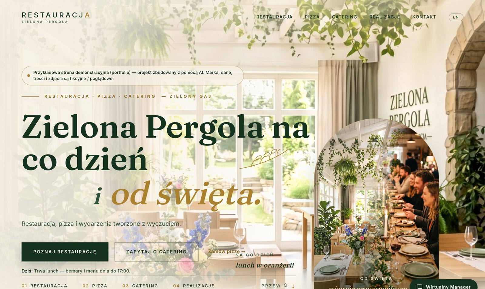
CO JUŻ DZIAŁA · 02 / 19
Gość klika ikonę w rogu i pyta o cokolwiek: dzisiejszy lunch, godziny, catering, rezerwację. Odpowiada prawdziwy model językowy, nie skrypt z gotowymi zdaniami — można też zapytać głosem i odsłuchać odpowiedź.
Jak to działa: Pytanie leci do modelu AI razem z aktualnym menu i zasadami restauracji; odpowiedź wraca w języku gościa (PL/EN) w kilka sekund.
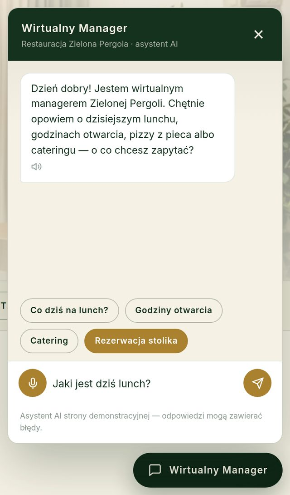
CO JUŻ DZIAŁA · 03 / 19
Zupa i dwa dania na każdy dzień tygodnia, z listkiem przy opcjach wegetariańskich. Restaurator zmienia treść w jednym miejscu, a menu aktualizuje się wszędzie — na stronie, w czacie AI i w poniedziałkowym newsletterze.
Jak to działa: Dane dań trzymane są w jednym pliku, z którego korzystają trzy różne funkcje strony naraz.
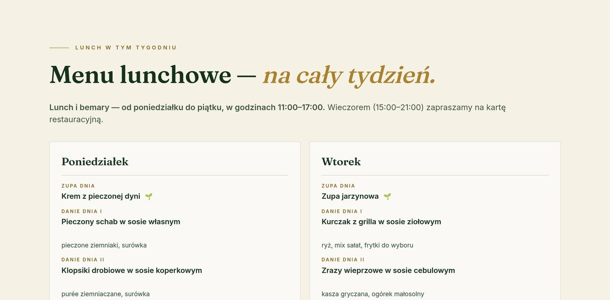
CO JUŻ DZIAŁA · 04 / 19
Gość wybiera stolik klikając na rysunku sali — plan sam blokuje stoliki za małe dla podanej liczby osób. Rezerwacja trafia prosto do kalendarza, a gość dostaje e-mail z potwierdzeniem.
Jak to działa: Dostępne godziny liczą się z bieżących godzin otwarcia (inne dla dnia powszedniego i weekendu) i znikają, jeśli już minęły dzisiaj.
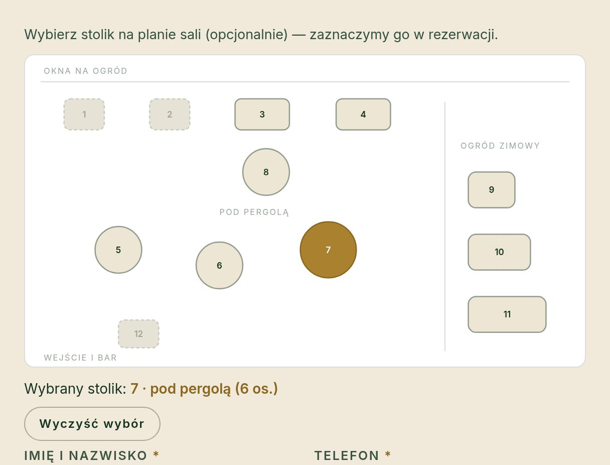
CO JUŻ DZIAŁA · 05 / 19
Zamiast ogólnego „błąd w formularzu” — każde pole dostaje własny, konkretny komunikat i znika, gdy dane są poprawne. Strona sama przewija ekran do pierwszego błędu.
Jak to działa: Telefon musi mieć 9–15 cyfr, e-mail realny format, zgoda RODO jest wymagana — wszystko sprawdzane w przeglądarce i ponownie na serwerze.
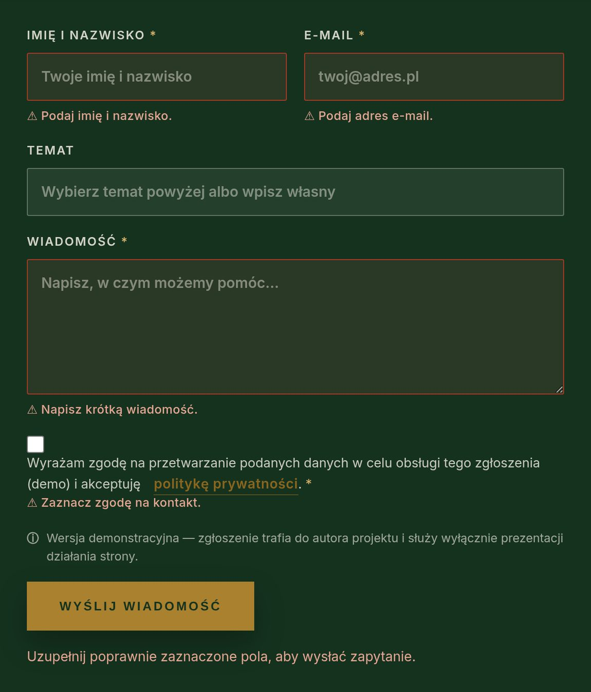
CO JUŻ DZIAŁA · 06 / 19
Ikona koszyka jest zawsze widoczna w nagłówku, z licznikiem pozycji — gość klika i z dowolnego miejsca strony otwiera wysuwany panel zamówienia, tak jak w znanych mu sklepach internetowych. Przy każdej pozycji może dopisać uwagę — „mniej ostra”, „bez cebuli” — i widzi ją potem w potwierdzeniu.
Jak to działa: Koszyk zapamiętuje zawartość w przeglądarce gościa; cena końcowa i uwagi są też sprawdzane po stronie serwera, zanim trafią do restauracji e-mailem.
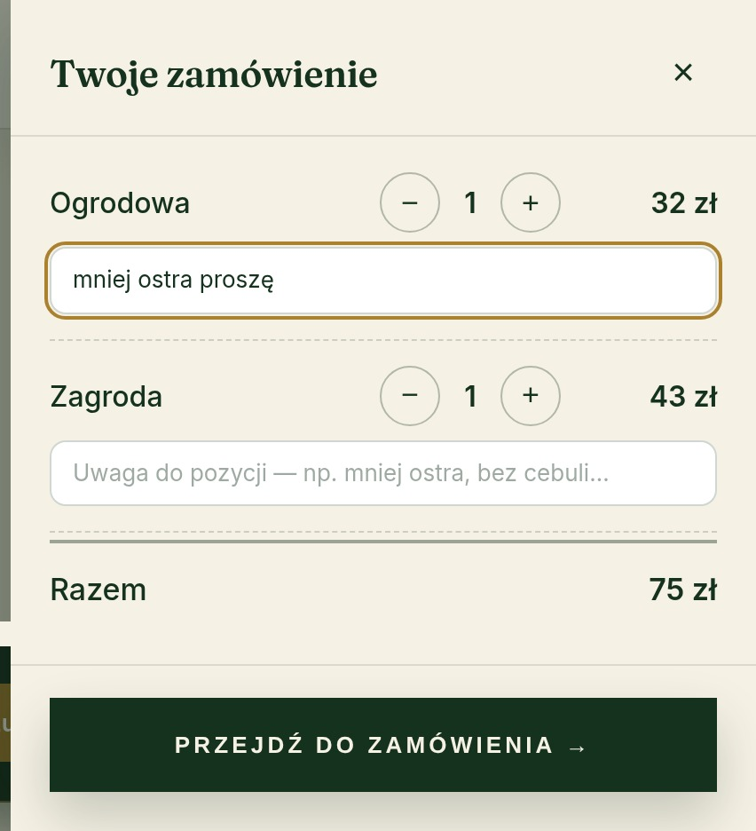
CO JUŻ DZIAŁA · 07 / 19
Gość zostawia e-mail raz, a każdy poniedziałek o 9:00 system sam wysyła aktualne menu lunchowe tygodnia — bez udziału człowieka.
Jak to działa: Automat pobiera to samo menu, które widzą goście na stronie, więc nigdy się z nim nie rozjedzie.
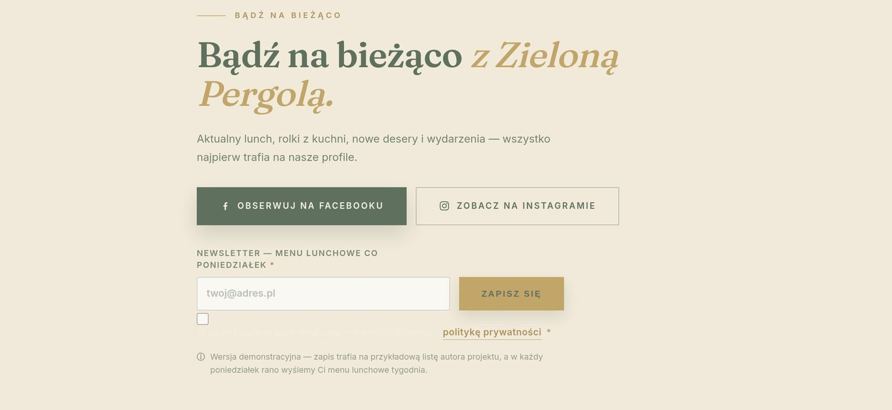
CO JUŻ DZIAŁA · 08 / 19
Krótkie nagranie głosowe opowiadające o restauracji w pół minuty — do posłuchania jednym kliknięciem, bez czytania.
Jak to działa: Nagranie wygenerowane głosem AI, osadzone jako zwykły odtwarzacz audio na stronie.
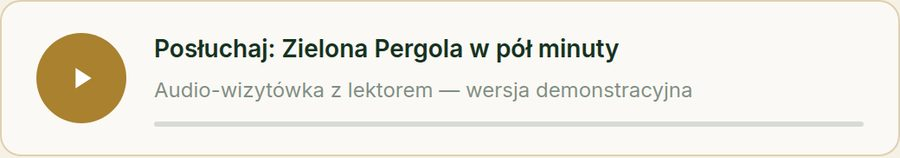
CO JUŻ DZIAŁA · 09 / 19
Zamiast prawdziwej mapy Google (która zdradziłaby, że adres jest fikcyjny) — własna ilustrowana mapa z parkingiem i przykładowymi ulicami, w kolorach marki.
Jak to działa: To rysunek wektorowy, nie zewnętrzna usługa — strona nic nie pobiera z Google Maps.
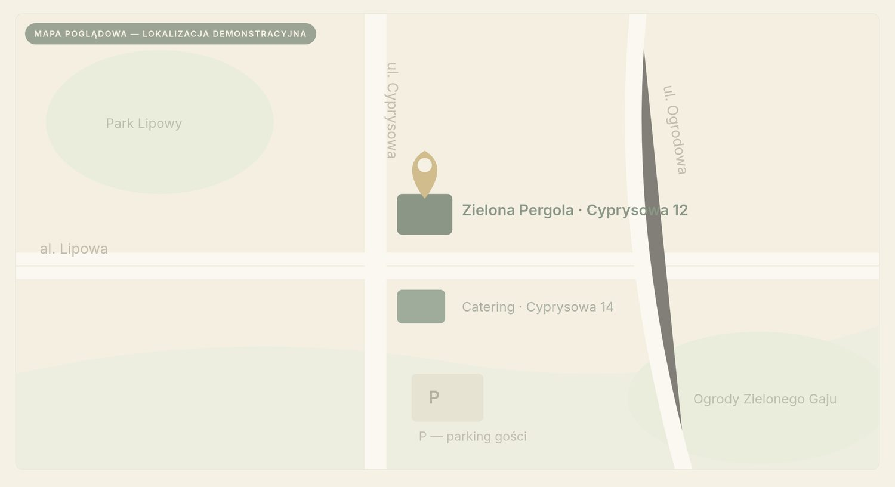
CO JUŻ DZIAŁA · 10 / 19
Pytania i odpowiedzi chowają się pod kliknięciem — sekcja zajmuje mniej miejsca i wygląda nowocześniej niż ściana tekstu.
Jak to działa: Pierwsze pytanie jest zawsze otwarte, reszta czeka na klik; działa też z klawiatury i z czytnikiem ekranu.
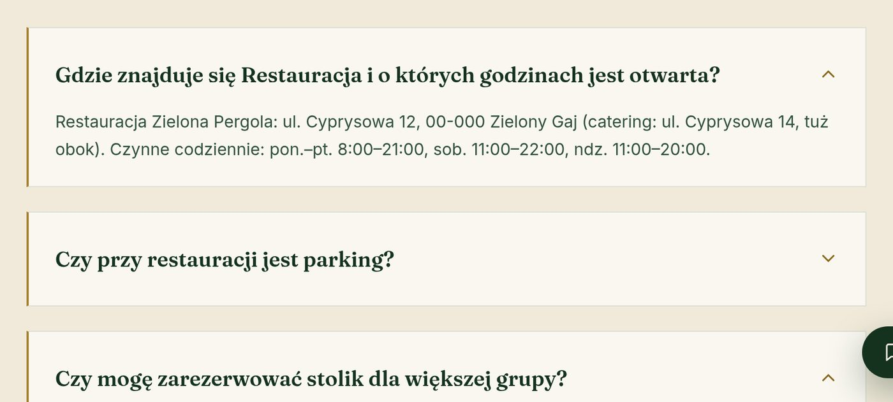
CO JUŻ DZIAŁA · 11 / 19
Strona naprawdę nie ma ciasteczek śledzących ani analityki — baner mówi to wprost, zamiast prosić o zgodę na coś, czego nie ma.
Jak to działa: Jeden przycisk „Rozumiem”; decyzja gościa zapamiętana lokalnie w jego przeglądarce.
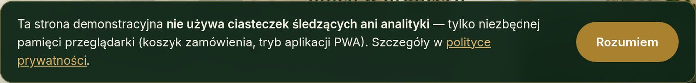
CO JUŻ DZIAŁA · 12 / 19
Każdy formularz — kontakt, rezerwacja, zamówienie, newsletter — ma wymagany checkbox zgody z linkiem do polityki prywatności.
Jak to działa: To realna zgoda na przetwarzanie danych, nie dekoracja — bez zaznaczenia serwer odrzuci zgłoszenie.
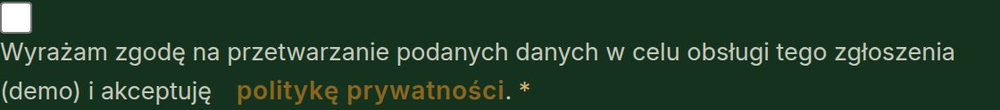
CO JUŻ DZIAŁA · 13 / 19
Menu, formularze, czat, plan sali — wszystko przemyślane osobno pod telefon, z dolnym paskiem szybkich akcji: zadzwoń, menu, catering.
Jak to działa: Widżet czatu na wąskich ekranach chowa się do samej ikony, żeby nie zasłaniał dolnego paska.
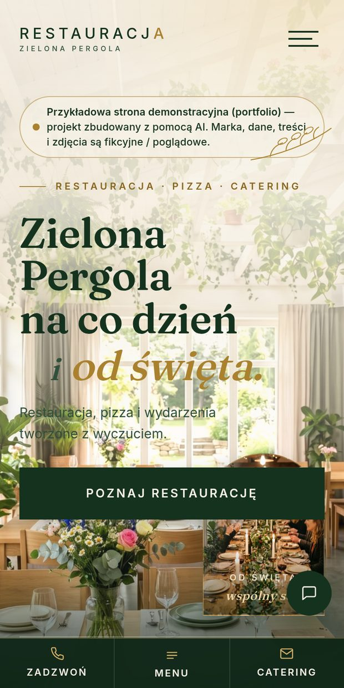
CO JUŻ DZIAŁA · 14 / 19
Po 18:00 strona główna sama przechodzi w cieplejszy, ciemniejszy nastrój — inne zdjęcie w tle, inny podpis. Rano znów jest jasno.
Jak to działa: Zegar w przeglądarce gościa decyduje, którą wersję hero pokazać — bez przeładowania strony.
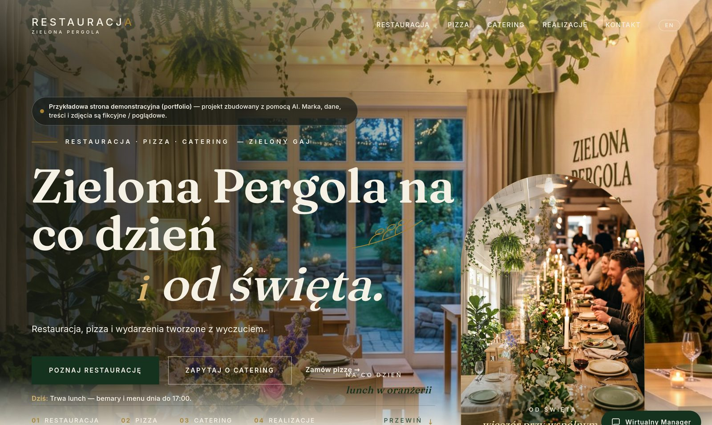
CO JUŻ DZIAŁA · 15 / 19
Każda podstrona ma bliźniaczy odpowiednik po angielsku, osobno przygotowany, z przełącznikiem PL/EN w nagłówku.
Jak to działa: Osobne strony dla obu języków, ale ten sam mechanizm formularzy i czatu — bez podwójnej pracy przy każdej zmianie.
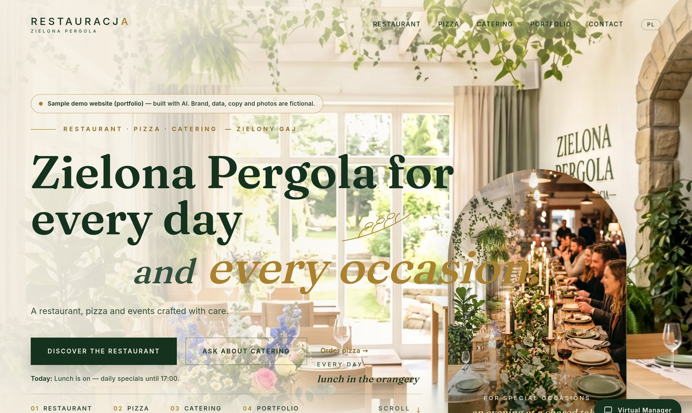
CO JUŻ DZIAŁA · 16 / 19
Prosta, elegancka typografia zamiast gotowego szablonu graficznego — to samo podejście przenosi się na inną nazwę, inne kolory, inny charakter lokalu.
Jak to działa: Logo to czysty tekst, nie plik graficzny — zmiana nazwy restauracji to edycja jednej linijki, nie nowa grafika.
CO JUŻ DZIAŁA · 17 / 19
Zdjęcia z wydarzeń podzielone na kategorie: wesela, rodzinne, firmowe, catering, restauracja. Gość filtruje jednym kliknięciem.
Jak to działa: Filtrowanie dzieje się w przeglądarce, bez przeładowania strony.
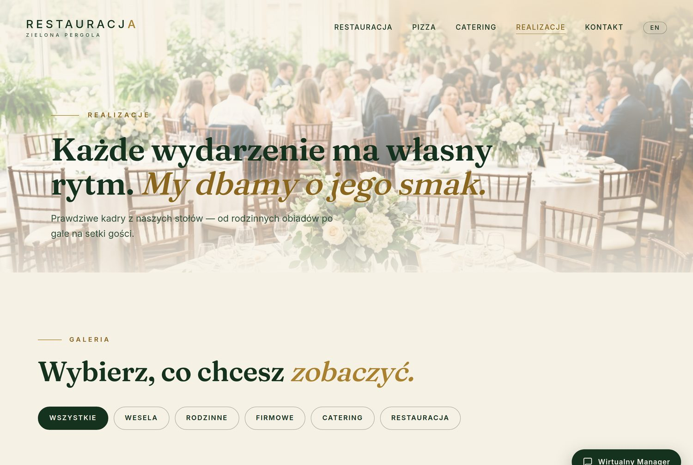
CO JUŻ DZIAŁA · 18 / 19
Gość dodaje stronę do ekranu głównego telefonu jak prawdziwą aplikację — własna ikona, pełny ekran, działa nawet przy słabym internecie.
Jak to działa: To standard przeglądarkowy (Progressive Web App) — zero opłat i zero procesu zatwierdzania w App Store czy Google Play.
Dodaj do ekranu głównego?
zielonapergola.pl
CO JUŻ DZIAŁA · 19 / 19
Codziennie o 17:00 — przypomnienie o jutrzejszej rezerwacji. W każdą niedzielę wieczorem — raport AI z podsumowaniem tygodnia i rekomendacjami dla właściciela.
Jak to działa: Wszystko dzieje się w tle na serwerze — restaurator dostaje gotowy e-mail, nie musi nic klikać.
CZĘŚĆ DRUGA
22 pomysły pogrupowane w cztery obszary: sprzedaż, AI, treść i technika. Przy każdym — orientacyjny „wow” na spotkaniu i nakład pracy.
SPRZEDAŻ I KONWERSJA · 01 / 22
Gość skanuje kod leżący na stole, widzi menu i zamawia od razu — kelner tylko wydaje, nie przyjmuje zamówień.
SPRZEDAŻ I KONWERSJA · 02 / 22
Przelewy24 albo Stripe zamiast symulowanego „zapłać przy odbiorze” — realna transakcja kartą lub BLIK-iem.
wymaga konta firmowego i weryfikacji
SPRZEDAŻ I KONWERSJA · 03 / 22
Przyjęte → w przygotowaniu → gotowe do odbioru — jak w aplikacji kurierskiej, z linkiem wysłanym w potwierdzeniu.
SPRZEDAŻ I KONWERSJA · 04 / 22
Gość kupuje bon online, dostaje e-mailem kod QR do zrealizowania w lokalu — gotowy prezent bez wychodzenia z domu.
SPRZEDAŻ I KONWERSJA · 05 / 22
Cyfrowa karta stemplowa — dziesiąta kawa gratis, wszystko na koncie gościa, bez plastikowych kartoników.
SPRZEDAŻ I KONWERSJA · 06 / 22
Sos, deser, dodatkowa porcja frytek — system sam podpowiada, zanim gość kliknie „zamawiam”, podnosząc wartość koszyka.
AI · 07 / 22
AI odbiera telefon i przyjmuje rezerwację głosem — nawet gdy w lokalu nikt nie może akurat podejść do słuchawki.
osobny projekt i koszt usługi telefonicznej
AI · 08 / 22
Ta sama wiedza co Wirtualny Manager, tylko dokładnie tam, gdzie gość już do Was pisze.
wymaga strony firmowej na Facebooku
AI · 09 / 22
Co poniedziałek gotowy pakiet pięciu postów z menu tygodnia — gotowe do wklejenia, bez zatrudniania grafika.
AI · 10 / 22
Formularz opinii, AI odpowiada uprzejmie i na temat, a najlepsze recenzje trafiają prosto na stronę.
AI · 11 / 22
Restaurator wpisuje nazwę nowego dania, dostaje fotorealistyczne zdjęcie — bez umawiania sesji zdjęciowej.
AI · 12 / 22
Rezerwacje, dzień tygodnia i pogoda razem podpowiadają, ile jedzenia szykować na jutro.
AI · 13 / 22
Mechanizm dwujęzyczny już działa — dodanie ukraińskiego czy niemieckiego to głównie tłumaczenie treści, nie nowa budowa.
TREŚĆ I MARKETING · 14 / 22
Sylwester, kolacja degustacyjna — gość zapisuje się przez formularz, a system sam pilnuje limitu miejsc.
TREŚĆ I MARKETING · 15 / 22
Krótkie wpisy o kuchni i wydarzeniach — budują historię lokalu i dobrze działają pod wyszukiwarkę Google.
TREŚĆ I MARKETING · 16 / 22
Krótka rolka wideo (wygenerowana albo prawdziwe nagranie) ożywiająca tło strony głównej.
TREŚĆ I MARKETING · 17 / 22
Twarze i historia lokalu budują zaufanie szybciej niż najlepiej opisane danie w karcie.
TREŚĆ I MARKETING · 18 / 22
Rozszerzenie portfolio o krótkie historie „jak to wyglądało” przy każdym większym wydarzeniu.
TECHNICZNE · 19 / 22
Restaurator sam zmienia dania i ceny z prostego panelu — bez proszenia programisty o każdą drobną zmianę.
częsty warunek decyzji klienta
TECHNICZNE · 20 / 22
Wiadomo, które podstrony działają najlepiej — bez łamania obietnicy „zero śledzenia” złożonej gościom.
TECHNICZNE · 21 / 22
Dodatkowy argument przy klientach publicznych i sieciowych, dla których dostępność cyfrowa bywa wymogiem formalnym.
TECHNICZNE · 22 / 22
Rezerwacja z formularza trafia prosto do systemu POS, którego restaurator już używa na co dzień.
zakres zależy od konkretnego systemu klienta
PODSUMOWANIE SPOTKANIA